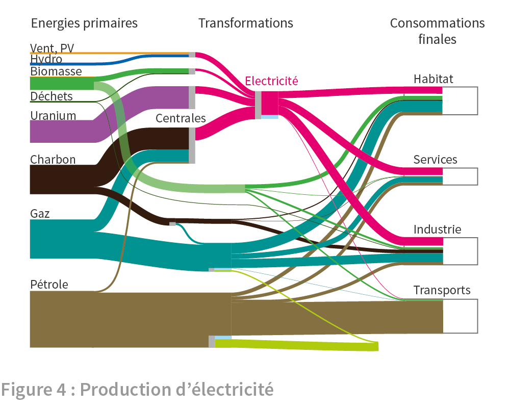

1. Repères
Comment l’énergie est-elle dépensée en Europe ? De quelles sources provient-elle, quelles transformations subit-elle et à quelles fins est-elle utilisée ? Les réponses se trouvent dans les tableaux de chiffres, dits « bilans de l’énergie », qui sont édités par Eurostat 1. Ces tableaux chiffrent l’énergie primaire qu’elle soit stockée dans des matières premières (pétrole, gaz, charbon, uranium) ou extraite de flux environnementaux (soleil et cycles qui en dépendent : végétation, atmosphère et eau). Ils suivent les transformations ultérieures en formes nouvelles d’énergie (électricité et chaleur notamment) et recensent les consommations finales des différentes énergies. Permettre à chacun de se faire une idée des grandeurs en jeu dans cet ensemble de données, c’est l’objectif de cet article, premier d’une série qui permettront de situer les différents pays européens.
Les graphiques qui suivent illustrent les quantités d’énergie extraites et importées, transformées et consommées dans les 28 pays de l’Union Européenne en une année. Ils sont constitués de traits dont la couleur indique le support matériel de l’énergie et l’épaisseur la quantité d’énergie mise en jeu sur une année. A gauche du graphique, se situe l’énergie primaire qui correspond à ce qu’on prélève dans la nature, avant toute transformation, en Europe ou ailleurs. Les traits, qui partent de l’énergie primaire, passent pour certains par des transformations au milieu du graphique, et se dirigent ensuite tous vers consommations finales à droite. Dans ce parcours de gauche à droite, qui conduit de l’énergie primaire à la consommation finale via les transformations, les traits se ramifient, de nouveaux apparaitront au cours des transformations. L’épaisseur de toute branche est proportionnelle à la quantité d’énergie qui la parcourt annuellement.
La figure 1 montre les énergies fossiles, provenant de la biomasse morte accumulée sur des temps géologiques au milieu des roches sédimentaires : charbon résultant de la végétation continentale, gaz et pétrole du plancton océanique.
Les consommations annuelles de ces combustibles fossiles (charbon, gaz et pétrole) et plus exactement de l’énergie primaire qu’ils contiennent est représentée par l’épaisseur du trait démarrant à gauche du graphique. En allant vers la droite, ces trois traits rendus distincts par leur couleur, se ramifient en « branches » rejoignant les consommations finales, à droite, dans l’habitat, les services, l’industrie et les transports. De plus, des branches primaires partent vers des transformations dont principalement les centrales productrices d’électricité.
Le pétrole est le premier fournisseur d’énergie primaire. Il fournit la totalité, ou presque, de la consommation des transports comme on peut le voir en comparant l’épaisseur de la branche à la hauteur du rectangle situé sous « Transports ». En effet, la totalité de la consommation d’énergie de chaque secteur (transports, industrie, etc.) est mesurée par la hauteur du rectangle situé sous son nom. Le gaz est le deuxième fournisseur d’énergie primaire et le premier dans la consommation de l’habitat, des services et de l’industrie. Le charbon est peu utilisé dans les consommations finales hors l’industrie. La plus grande partie est consommée dans les centrales.
Voyons à présent les transformations réalisées de l’énergie primaire en des formes nouvelles d’énergie. La plus importante est la production d’électricité dans les centrales thermiques (1). Le charbon est le premier combustible des centrales et il est suivi du gaz . La chaleur de combustion de ces matières fossiles, représentée par la hauteur du rectangle gris clair, est exploitée dans les centrales thermiques, dites conventionnelles, pour produire l’électricité qui apparaîtra par la suite. Une autre partie du charbon subit diverses opérations qui produisent du gaz (2). Les producteurs d’énergie utilisent une partie du pétrole ou du gaz pour leurs activités de transformation ou transport de l’énergie. Cette consommation du secteur énergétique (3) est représentée par les segments bleu pâle. Les hydrocarbures (pétrole et gaz) peuvent aussi passer dans des procédés chimiques produisant des matières plastiques (4) dont le contenu énergétique est représenté par la branche jaune.
Les combustibles fossiles fournissent les trois quarts de la consommation d’énergie primaire. Le seul pétrole en représente 34%. La combustion de ces matières fossiles émet le gaz carbonique responsable du changement climatique. On mesure l’effort à accomplir pour réduire notre consommation de ces combustibles. La réduction des gaspillages d’énergie et le développement des énergies décarbonées sont les deux moyens d’action. Quelles sont ces énergie décarbonées qui représentent le dernier quart de l’énergie primaire consommée dans l’UE? Ces énergies dont le fonctionnement n’émet pas de carbone, sont le nucléaire et les renouvelables.
Le nucléaire exploite la radioactivité naturelle, présente en traces dans toutes les roches de la croûte terrestre et concentrée dans les minerais d’uranium. La fission du noyau d’uranium, réalisée dans les centrales nucléaires libère une énergie environ un million de fois plus élevée qu’une combustion. Cet avantage en efficacité est accompagné de difficultés plus grandes qui requièrent une technologie très avancée.
Les renouvelables regroupent différents supports d’énergie qui proviennent de sources naturelles qui ne s’épuisent pas. La biomasse issue de productions agricoles ou forestières est brûlée dans des centrales pour produire de l’électricité ou pour la production de chaleur dans des chaufferies collectives, des procédés industriels ou les chaudières de particuliers. Une faible partie est utilisée comme biocarburant pour les transports. La combustion de la biomasse émet du gaz carbonique mais la croissance de nouvelles plantes reprend à l’atmosphère le gaz carbonique émis.
Les déchets ménagers ou industriels contiennent une énergie calorifique qui peut être récupérée dans des usines d’incinération. Par leur traitement ils s’apparentent à la biomasse, mais ils ne produisent pas une énergie sans carbone.
Les autres sources renouvelables produisent de l’électricité par conversion directe d’un flux naturel. L’hydroélectricité utilise l’écoulement de l’eau au fil des rivières ou depuis des lacs de retenue pour mettre en mouvement des turbo-alternateurs ; l’éolien tire l’électricité de l’énergie cinétique du vent qui entraîne les aérogénérateurs; le photovoltaïque convertit le flux solaire en énergie électrique dans un matériau semi-conducteur. Les productions éoliennes et solaires sont soumises à l’intermittences des flux qui les alimentent. Enfin, le solaire thermique et la géothermie utilisent des flux thermiques pour le chauffage ou la production d’électricité. Leurs contributions ont été associées à la biomasse et s’en distinguent par les traits de couleur rouge superposés au vert de la biomasse.
Ensemble, ces énergies représentent un quart de l’énergie primaire consommée en Europe et sont dirigées principalement vers la production d’électricité. Elles n’émettent pas de CO2 dans leur fonctionnement sauf les déchets et la biomasse dont son renouvellement récupère en théorie le CO2 émis lors de la combustion. Elles totalisent un quart de l’énergie primaire consommée dans l’UE qui se partage ainsi : 13,5% pour le nucléaire, 7,7% pour la biomasse, 1,9% pour l’hydroélectricité, 1,4% pour l’éolien et le solaire PV et moins de 1% pour les déchets.

L’électricité apparaît sous la forme des traits rose et provient des centrales productrices d’électricité classées en quatre catégories, du haut vers le bas : - Conversions directes en électricité de l’énergie cinétique de l’eau (hydroélectricité), du vent (éolien) et du rayonnement solaire (photovoltaïque). - Centrales thermiques utilisant la chaleur de combustion de la biomasse et déchets ou les flux de chaleur solaire et géothermique - Centrales thermiques nucléaires utilisant la chaleur dégagée par la fission de l’uranium. - Centrales thermiques conventionnelles utilisant la chaleur de combustion des produits fossiles (charbon, gaz ou pétrole).
Dans la première catégorie des conversions directes de flux, l’énergie primaire (contenue dans les flux naturels) est définie par convention égale à l’électricité produite. Aussi le trait rose de l’électricité a une épaisseur égale au total des apports d’énergie primaire (Vent, PV et Hydro-électricité).
Dans tous les autres cas des matières sont consommées et l’énergie primaire est définie par la quantité de chaleur qu’elles peuvent libérer. Cette chaleur, dégagée dans une chaudière, chauffe un fluide (en général de l’eau se vaporisant) qui travaille dans un cycle thermodynamique faisant tourner un turbo-alternateur producteur d’électricité. Le principe de Carnot démontre l’impossibilité de transformer toute la chaleur en puissance motrice ; une partie de la chaleur doit être rejetée dans l’environnement par l’intermédiaire d’un condenseur aussi nécessaire au cycle que l’est la chaudière. En pratique, l’électricité produite représente environ 35% de l’énergie primaire (la chaleur contenue dans les matières consommées). Aussi le trait de l’électricité, sortant des centrales thermiques conventionnelles (combustion de fossiles ou de biomasse) ou nucléaires (fission de l’uranium), a une épaisseur réduite environ au tiers de celui l’énergie primaire entrant dans les centrales.
L’électricité primaire désigne cette électricité qui sort des installations de production. En Europe, l’électricité primaire provient pour 27,9% des sources renouvelables, pour 26,8% des centrales nucléaires, pour 45,3% des centrales à combustibles fossiles.
La chaleur rejetée par le cycle thermodynamique des centrales thermiques peut être en partie utilisée dans un réseau de chauffage urbain ou un procédé industriel. Cette chaleur est indiquée par le trait pourpre.
L’électricité de différentes origines est collectée par un réseau de transport et de distribution allant vers les utilisateurs finaux. Un réseau électrique, national avec des liaisons frontalières, distribue le mix énergétique des moyens de production qui l’alimentent. En moyenne sur l’Union, les énergies décarbonées fournissent plus de la moitié (55%) de la production électrique. Or elles ne représentent que 25% de l’énergie primaire totale. Ainsi l’électricité concentre l’utilisation des énergies décarbonées et son utilisation constitue un moyen de réduire les émissions de CO2. Les renouvelables et le nucléaire contribuent à parts à peu près égales à décarboner l’électricité. C’est une moyenne pour les 28 pays de l’UE qui ont des mix très différents qui sont décrits par ailleurs. Une partie de l’électricité est consommée par le secteur énergétique (9%) et une autre perdue lors du transport (5%). L’électricité se répartit ensuite à parts à peu près égales entre l’habitat, les services et l’industrie. Le transport en utilise une très faible partie.
La chaleur provient des centrales thermiques de cogénération (électricité et chaleur) et des usines d’incinération des déchets ne produisant que de la chaleur. Une partie est utilisée par le secteur de l’énergie ou perdue dans la distribution. Les utilisations sont principalement les chauffages de locaux (habitations ou commerces) puis les procédés industriels.
Voyons à présent l’utilisation de l’énergie lors de sa consommation finale. Pour les transports, quand un automobiliste remplit son réservoir à la pompe, il acquiert une réserve d’énergie dont seulement une petite partie servira effectivement à déplacer la voiture. Les trois quarts de l’énergie seront rejetés sous forme de chaleur par le pot d’échappement. En effet, le moteur thermique d’une voiture convertit la chaleur de la combustion en puissance motrice. Le principe de Carnot s’y applique donc et limite, comme dans les centrales thermiques, la part de puissance motrice récupérable. Lors de la conduite sur route, le rendement du moteur atteint 26% mais il baisse en ville. Le rectangle bleu foncé montre cette part utile de l’énergie consommée.
Dans le chauffage des habitations et locaux, les chaudières et circuits de chauffage, convertissent la chaleur de combustion à haute température en chaleur confortable. Si aucun principe physique n’empêche de récupérer la chaleur en totalité, en pratique le rendement est de 80%. C’est le rendement que nous avons utilisé pour les usages des combustibles dans l’habitat, les services et l’industrie. Les rectangles bleus représentent dans chaque cas la part utile de l’énergie. Cette identification de la part utile de l'énergie est déduite de publications du Lawrence Livermore National Laboratory 2.
Pour conclure, cette figure donne les quantités d’énergie consommées annuellement qui sont exprimées en puissance moyenne (quantité d’énergie sur une année, ici 2012) rapportée à un habitant de l’Union Européenne. Rapporter la consommation à un habitant fournit la meilleure base de comparaison de pays de populations différentes. L’unité est le watt moyen pour un habitant (symbole Wm/hab) ; l’indice m ajouté au watt (Wm) permet de distinguer cette moyenne annuelle d’une consommation instantanée.
Tentons une synthèse de ces différentes données. La consommation annuelle d’énergie primaire par habitant est de 4405 Wm/hab ; elle se répartit en 74,7% de fossiles, 13,5% de nucléaire, 11,0% de renouvelables et 0,8% de déchets. L’énergie primaire sert pour 49,2% directement à la consommation finale d’énergie, pour 41,8% à la production d’électricité et de chaleur et pour 9% à la consommation du secteur énergétique et à la fabrication de plastiques.
La production d’électricité est approvisionnée par 1839 Wm d’énergie primaire et fournit 759 Wm d’électricité et 156 Wm de chaleur. La puissance résultant de l’opération approche la moitié de la puissance entrante (rendement de 49%).
La consommation finale vaut 2890 Wm. Elle représente environ les deux tiers (65,7% précisément) de l’énergie primaire ; c’est la conséquence des rendements des transformations (production d’électricité et de chaleur auxquelles viennent s’ajouter les autres transformations sur le pétrole, le charbon ou le gaz). La consommation finale se répartit en 26,2% pour l’habitat, 16,4% pour les services, 26,6% pour l’industrie et 31,8% pour les transports.
La part utile de l’énergie récupérée lors de la consommation finale représente 1965 Wm, soit environ les deux tiers de l’énergie consommée (68%) ce qui est une moyenne de rendements très différents entre les transports (26%) et les autres secteurs (situés entre 86% et 90%). La raison en est, rappelons le, le rendement de la conversion de la chaleur en puissance motrice qui concerne les seuls transports.
Le lecteur est à même de faire toute comparaison qu’il souhaite à partir des chiffres de la figure 7. D’autres articles présentent des formes simplifiées de ce bilan pour l’Union Européenne et pour les 18 pays les plus peuplés qui la compose. ◊
Energy balance sheets 2012 Eurostat 2014 edition ↑